前の記事では、とても多くの方に読んでいただき、感謝の気持ちでいっぱいです。
https://note.com/alive_sheep6563/n/necf25137a449
*本日、記事の内容を一部修正しました。
しかし改めて記事を読み返してみたところ、
モデル選びやプロンプト作りなど、
どうみても私が一から作り込んでイラストを
生成したように見える
ことに気がつき、慌てて本記事を書くに至りました。
私は画像生成アプリ「SeaArt(シーアート)」を2ヶ月前から使い始めた初心者で、最近やっとモデルの変え方や調整などを変更できるようになりました。
前回の記事のイラストは、金田まりが
一から生成したわけではなく、
公開されていたイラストを元に、
少しプロンプトを変えて生成しただけに
すぎません。
誤解を招く表現になっており、
楽しんで読んでくださった皆様に
ご迷惑をおかけしてしまいました。
本当に申し訳ないです。
本当にすごいのは、こちらのイラストを投稿されてる胡麻団子さまです。

同じことを繰り返さないために、
今回のようにイラストの雰囲気をガラリと変える際は、今後は
参考にしたイラストの明記(出典)
商用利用の可否の確認
を徹底していきます。
上記を踏まえた上で、
ChatGTPやGeminiなどでイラストを生成してるけど、なんかしっくりこない
他の人と被らない、自分の世界観を表現したイラストを生成したい
AIイラストのアプリやサービスを使いたいけど、なにを使ったらいいか分からない
あなたがそんな思いを持っていたら、
ぜひ続きを読んでみてください。
AIイラスト初心者の私でもできた、
SeaArtを実際に使った画像生成を
お伝えしていきます♪
以下の記事のイラストを、簡単に生成できるようになりますよ！
https://note.com/alive_sheep6563/n/necf25137a449
無料でイラストをたくさん生成できるので、
これを機にチャレンジしてみませんか？
🎨 SeaArtの魅力をご紹介！
SeaArtは、AI画像生成ツールである
「Stable Diffusion」を手軽に、無料で楽しめる Webサービス。
日本語でプロンプトを入力するだけで、プロのようなイラストやリアルな写真を生成できます。
毎日もらえるクレジットを使って、
無料で生成可能なところも大きなメリット。
私はクレジット消費の少ないモデルを選んでいるので、1日10回以上生成できることも。
また、クレジットを使えば動画生成や背景透過なども可能です。
初心者でも直感的に操作できて便利です。
各専門用語とその関係はこちら▼
自分の勉強も兼ねてまとめます。
読み飛ばしてもらってもOKです。
1. モデル (Model) - 「車全体」
イラストを生成するために必要なAIのプログラム全体のこと。
イラスト生成のすべての機能（描画、色、構図など）を含んだ「基本セット」です。
車に例えるとエンジン、ボディ、タイヤなど、すべてが揃った状態です。
Checkpoint
モデルの核となる巨大ファイルで、AIが学習した知識のすべてが詰まってます。
どのような絵柄（リアル系/アニメ系等）で描くかという全体的なスタイルを決定します。
車のエンジンに例えると、高性能なエンジン。良いチェックポイントを選ぶと、モデル(車)の性能全体が良くなります。
SDXL (Stable Diffusion XL)
チェックポイントの種類の一つで、現在最も高性能なAI技術を指します。
従来の技術（SD 1.5など）と比べて、高解像度で、手や指といった細部まで破綻しにくい画像を生成できます。
車で例えると最新・最高級の高性能エンジンを使っているようなものです。
LoRA (ローラ)
チェックポイントに追加して使う、特定の要素を修正・追加するための小さなファイルです。
全体のスタイルは変えずに、
このキャラクターだけを出す
特定の衣装やポーズを追加する
など、ピンポイントな調整が可能です。
車でいうと特定のキャラクターのステッカー、エアロパーツというような、基本性能は変えずに、見た目や機能の一部を簡単に変更できます。
まとめ
SeaArtでイラストを作る手順は、
①SDXLチェックポイント（高性能なエンジン）をベースに選ぶ
②LoRA（カスタムパーツ）を組み合わせて、キャラクターや画風を追加します。
SeaArtはアプリ/ブラウザで利用できます。
私はパソコンを常に開ける環境では無いので、アプリ版を使ってます。
🤖実際に使ってみよう
まずは新規登録から。
ブラウザサイトから見てみますか？▼
サイトを開くと右上にあります！
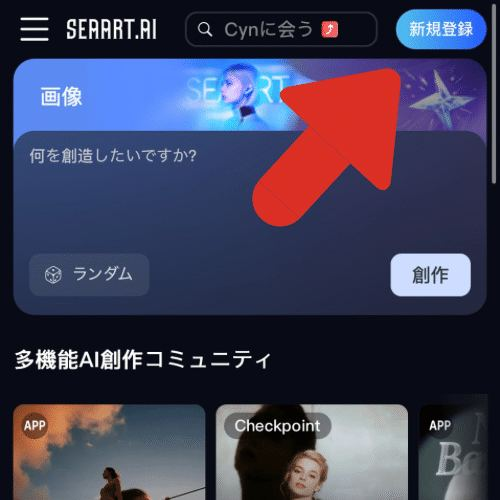
新規登録を押すと、以下の案内が出ます。
お好みで選んでログインしてくださいね😊
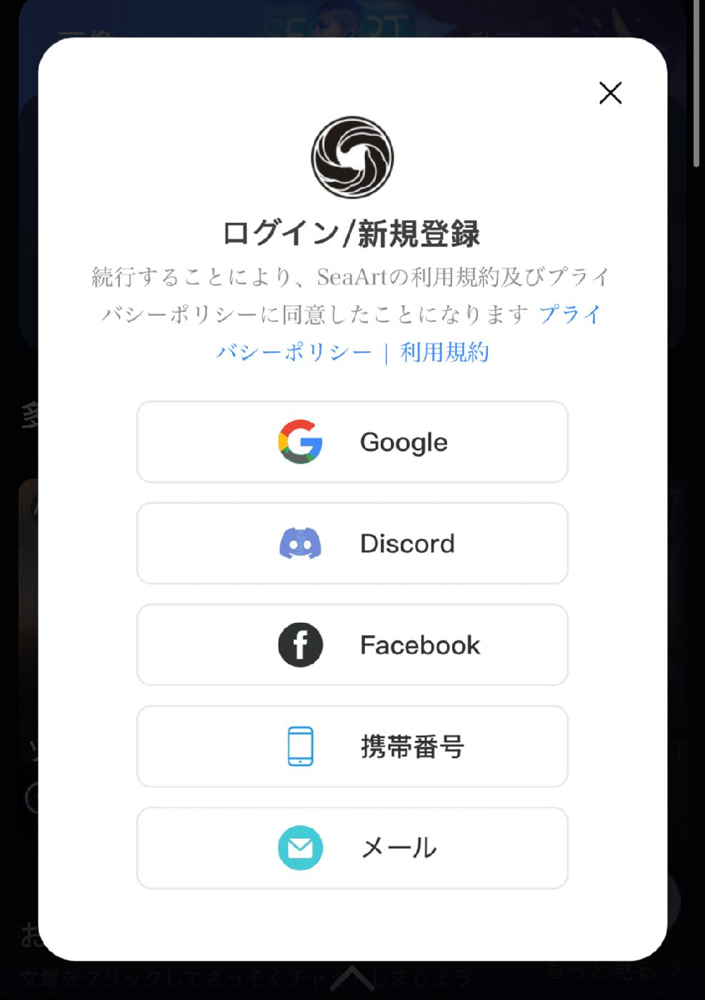
ログインするとすぐさま広告が出ます。
右上の×を押すと消えるので、安心してくださいね！
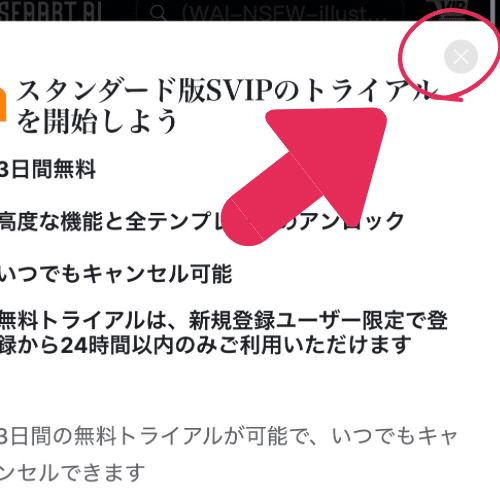
無事ログインしたら、いったん画面から離れてこちらのQRコード経由でSeaArtに戻ります。
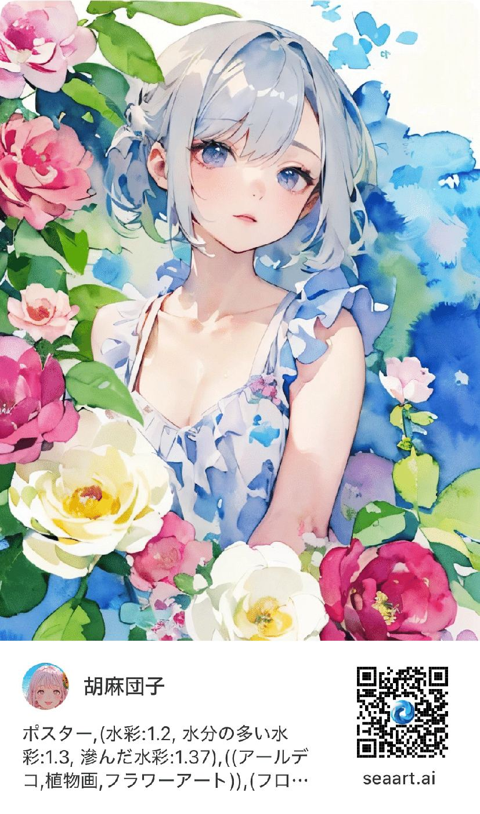
QRコードから以下の画面に飛ぶはずです。
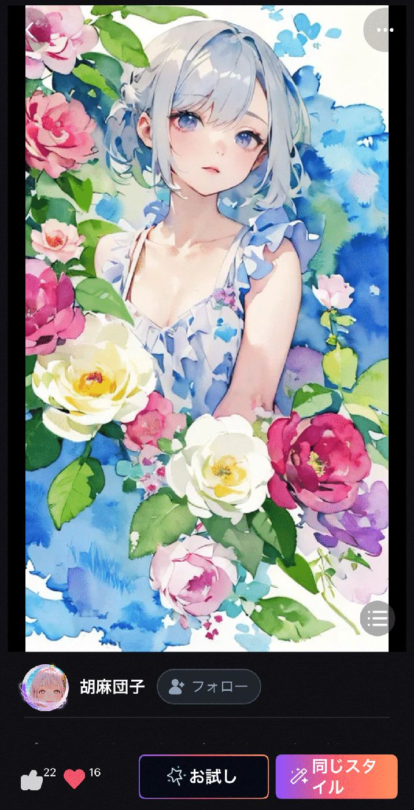
ここまできたら、もう大丈夫です♪
画面右下の、「同じスタイル」を押しましょう！
するとプロンプト画面が出てくるので、
赤い丸で囲った拡張ボタンを押します。
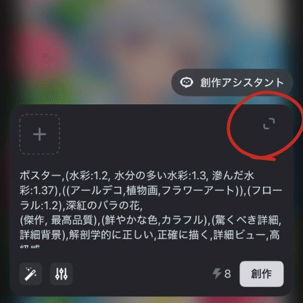
拡張ボタンを押すと、このイラストを描くときに使ったプロンプトがそのまま出てきます。
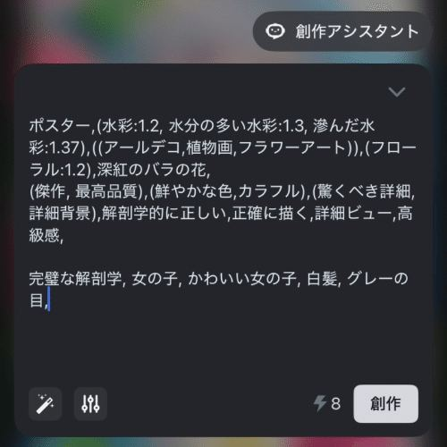
このプロンプト画面で、あなたの生成したいイラストをイメージしながらプロンプトを書き換えます。
私の場合は、以下のような感じ。
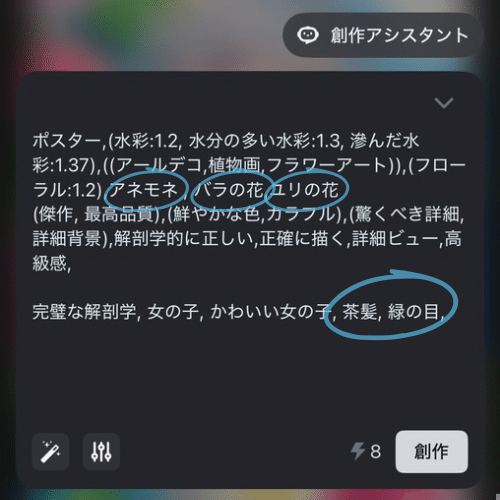
水色の囲み部分が変更箇所です。
バラの色には拘らないので色指定を消し、
代わりにアネモネ を入れてみました。
右下の「創作」ボタンを押すと、生成スタートです。
創作ボタンの隣の「8」は生成で消費するクレジットです。
無くなったら無料でイラスト生成できないので注意！アカウント画面でクレジット数を確認できます😊
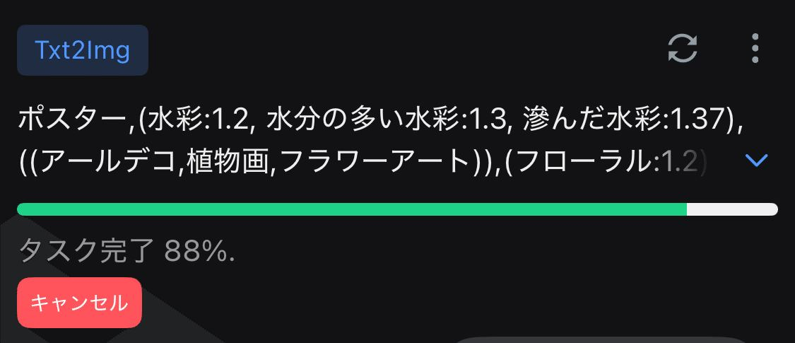
↓
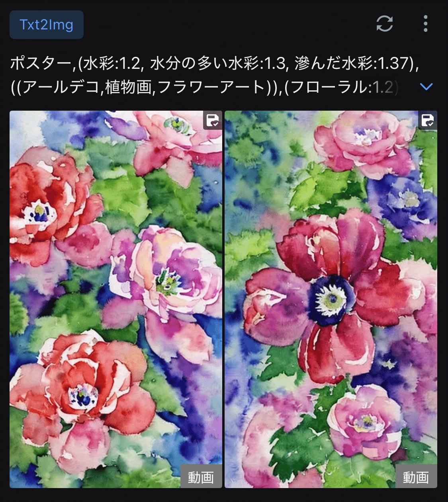
アネモネ ！！お花画像のできあがりです🌸
今回は人物画になりませんでした。
今度はプロンプトの一部をいじります。
理由はバラとユリが出るようにするためです。
ついでに、透明感も入れてみました！
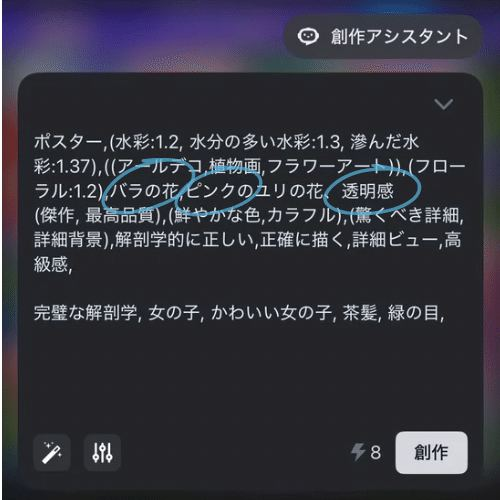
今度はどうかな……？？
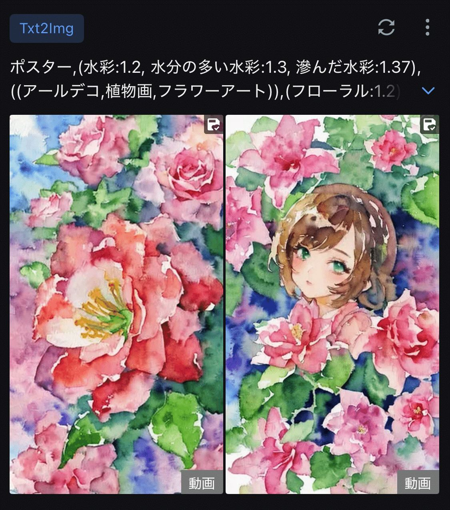
金田まり出現！！
プロンプトを少し変えるとうまくいくこともあれば、延々とお花画像が出てくることも。
根気強く続けると、たまに好みドンピシャな
イラストが生成されます。
夫に話したらパチンコみたいと言われました。
⚠️イラスト利用時はご注意
注意していただきたいのが、生成時に使ったモデルやSDXLなどで商用利用を許可しているかを確認する必要がある点です。
ここの作業を怠ってしまい、反省しきりです…
以下の手順でチェックしましょう！
プロンプト編集画面の左下(水色の丸部分)を
押すと……
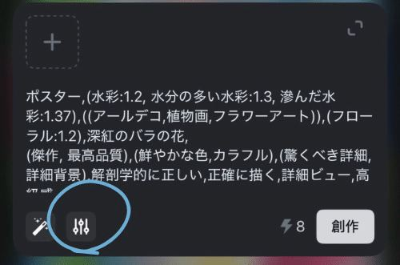
隠れていた詳細設定画面が出てきます！
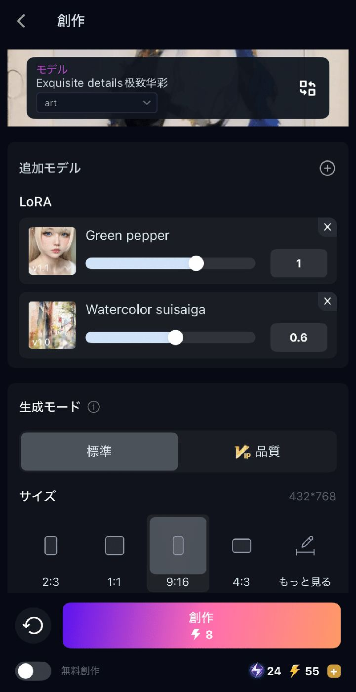
ここでは、イラストの土台となったモデルや
追加されたLoRAなどを見ることができます。
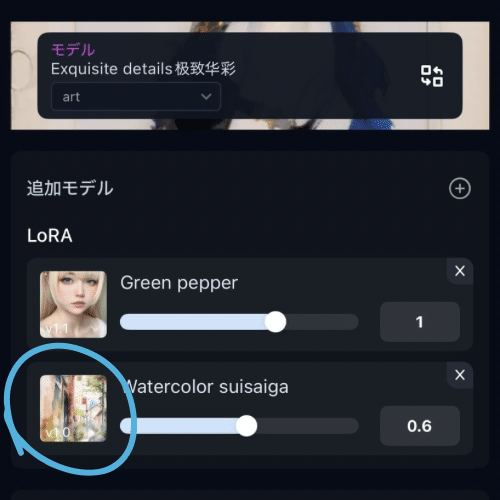
例えば上の ”Watercolor suisaiga ”を押すと、
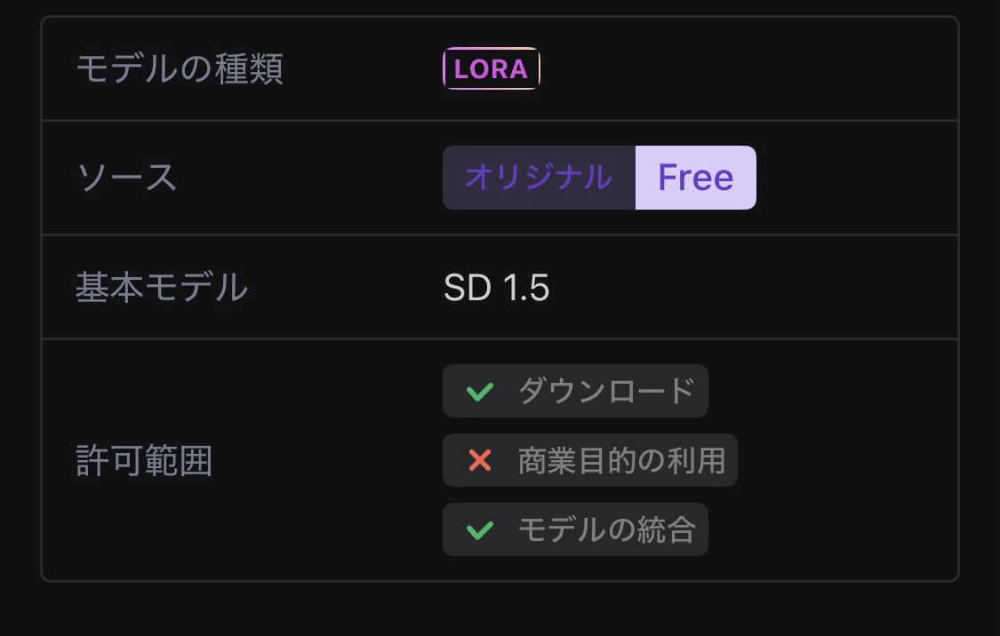
このLoRAを使用できる範囲が分かるんですね。
商業目的の利用は不可になってます。
なので、このLoRAで生成したイラストを
有料記事にサムネや挿絵として使うのはNG。
基本的にSeaArt は、無料プランでもイラストの商用利用は問題視されません。
でも使うモデルやLoRAなど、ファイルごとに許可範囲が異なるので、チェックは必要になるんですね。
今回の場合は、
あくまで趣味の創作での利用として、
留めていただければ幸いです。
有料記事に利用される可能性もあるので、
前の記事に紹介したみんフォトへの投稿画像も削除しました。
軽率な判断で投稿したことが恥ずかしいです。
みんフォト投稿については商用利用OKをクリアした状態で、水彩画を生成することを目標に頑張ります！
🌷別LoRAとプロンプトで再チャレンジ
先ほどのイラストを元に、別のLoRAを追加したりプロンプト変えたりして再チャレンジしてみました！
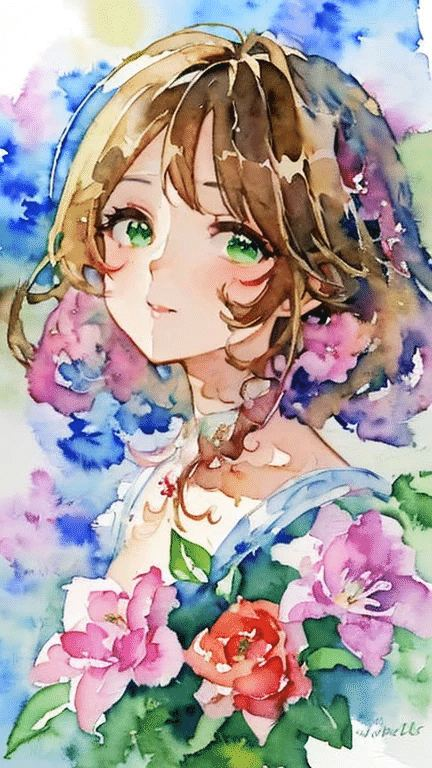
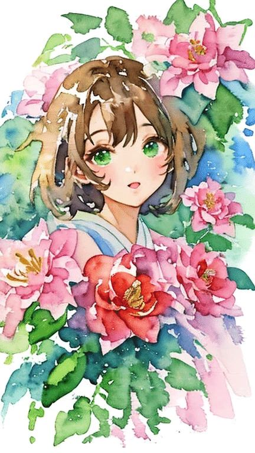
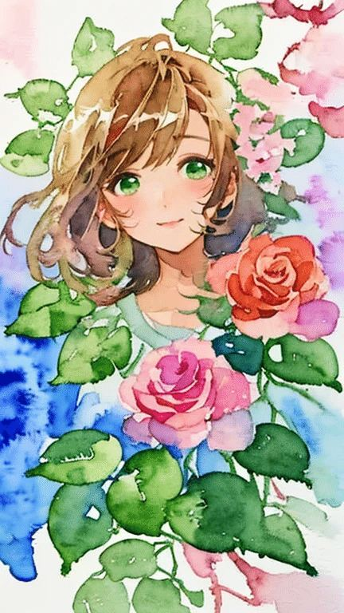
普段の金田まりのLoRAを混ぜたので、
少しいつもの金田まりに近づきました！
AIイラストって、敷居が高いイメージがあってやり始めるまで3ヶ月かかったんですが、
やってみると簡単です。
イラスト生成が気になるけどやってない方へ。
やってみようかな…と
思ってもらえたら嬉しいかぎり。
AIイラストの諸先輩の皆さま、
お気づきの点やおすすめモデル等、
アドバイス頂ければ泣いて喜びます🥲
ここまでお付き合いいただき感謝です！
規約を守ってAIイラストを楽しみましょう♪
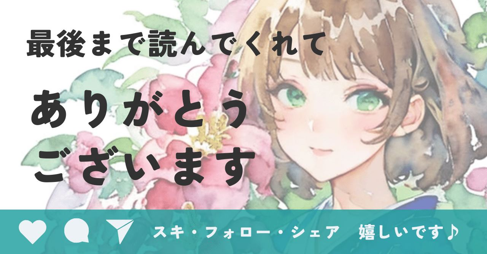